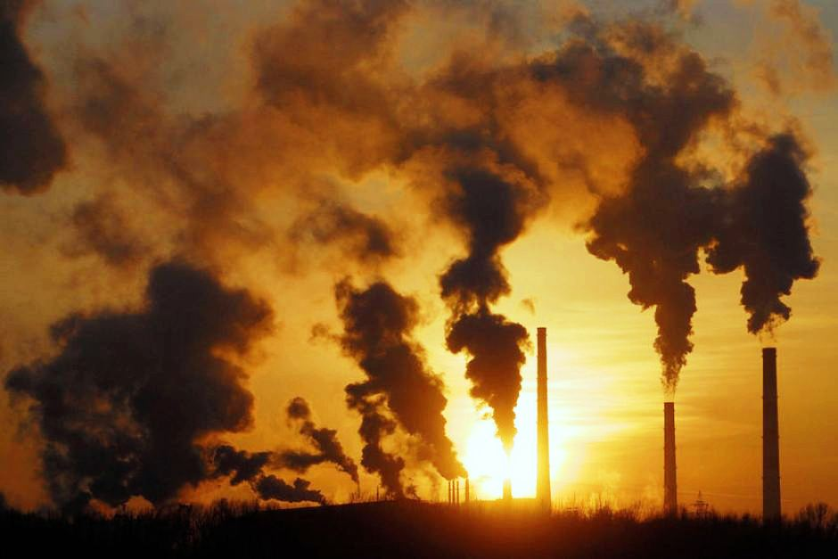
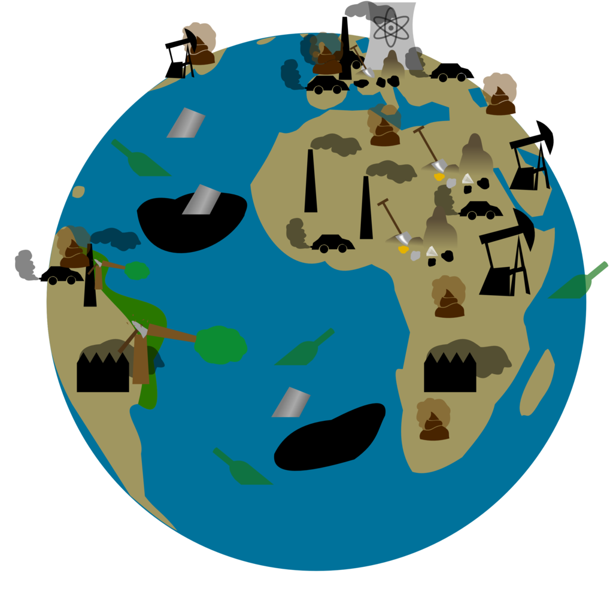

Causes:Factories

Factories need an energy source to power
their production processes.
In the United States, this has been
electricity generated by fossil fuel burning,
in particular coal.
How do factories pollute air?s
Factories pollute the air through fossil fuel emissions. These emissions include carbon dioxide, methane, and nitrous oxide. combustion creates these toxix pollutans.
